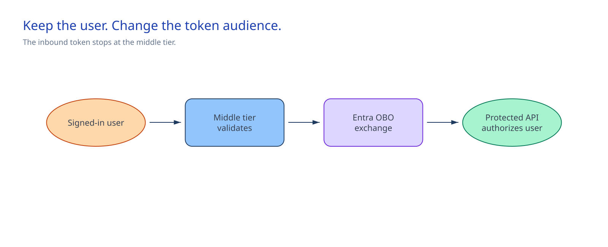

Chapter 2 of 6
Architecture at a glance#

This design preserves the signed-in user's authority across a trusted middle tier. The downstream API can make its decision for that user instead of treating every request as the same application.
The client first gets a token for the Python middle tier. The middle tier validates it, then sends the user's assertion and its certificate to Microsoft Entra ID. Entra issues a second token for the protected downstream API. That token carries the user's delegated identity. The API checks the delegated scope and the user's access to the requested resource. One user can succeed while another receives a denial through the same middle tier. A workload identity would give every request the same application authority.
Microsoft Entra ID holds the application registrations, permission grants, and token issuance. Azure Key Vault and the approved host control the certificate and how the runtime receives it. The downstream API decides which resources each user may access. The repository defines the configuration and claim checks, along with the threat model, runtime code, and operational scripts.
The trust chain ends at the downstream authorization response. The inbound bearer token never crosses the middle-tier boundary. A denial stays a denial. The middle tier cannot retry with application-only authority or change the resource's access model.
Design choices and tradeoffs#
| Choice engineers need to make | Route used here | Why this route fits | What the team accepts | Change course when |
|---|---|---|---|---|
| Which authority reaches the API? | OAuth 2.0 OBO with delegated permissions | The API can decide for the signed-in user | Consent, user-capable clients, and separate token audiences | The operation becomes shared or background work |
| How does the middle tier prove its identity? | An exportable Key Vault certificate provided as a protected PFX file containing the certificate and private key | The shipped MSAL component can use it without a client secret | The team must rotate the certificate; nonexportable HSM keys need another design | The host supports an approved key-bound client authentication path |
| How are existing registrations changed? | Merge the module's exact entries and preserve everything else | The module touches only the permissions it owns | Microsoft Graph has no what-if operation for this change, so preflight compares live state | The registrations move to an approved declarative lifecycle |
| How do we test the authorization boundary? | Call once as a permitted user and once as a user the downstream resource denies | The pair separates a successful token exchange from the API's resource decision | Two test users need deliberately different access to the downstream resource | The API can run an automated policy test that proves the same distinction |
Architecture guidance#
Start with Microsoft’s OBO flow guidance. It explains the different roles of the inbound audience, user assertion, and downstream scope. Choose this module only when an application-only path would erase a real per-user authorization decision. Record signed-in user OBO before configuration starts.
Once that boundary is agreed, app-registrations.json records the three existing application registrations, both API audiences, the exact delegated scopes, and the named identity owner. control-definition.json records signed-in user OBO as the authority decision. The module does not configure an application-only managed identity. app-registrations.json records the exact delegated permissions. token-claim-contract.json lists the issuer, audience, client, scope, and user claims that the middle tier accepts. Preflight compares those definitions with live Microsoft Entra state and prints the proposed change because Microsoft Graph has no what-if operation for application-registration updates. Follow the Microsoft Graph application update semantics so the update preserves collection values owned by other work.
The runtime authenticates with the protected PFX described by the certificate binding. This route works only with an exportable certificate. Check the Key Vault certificate export boundary before the team approves it; a nonexportable HSM key needs a different client-authentication design.